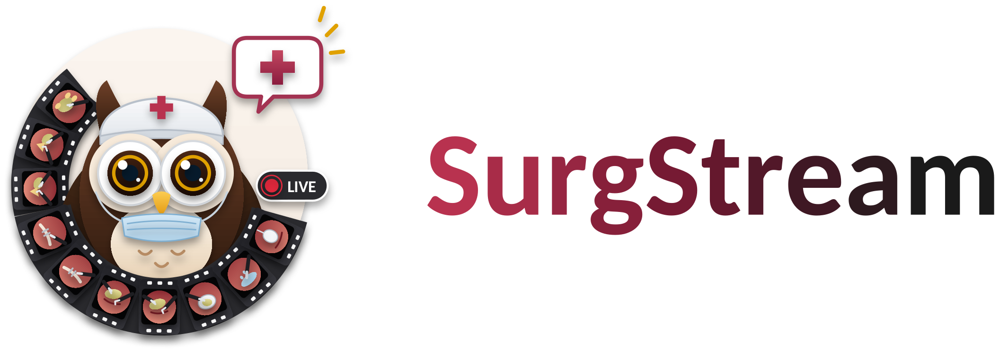

WAMWhat to remember
Workflow-Anchored Memory
Timestamped instrument–action–target observations are folded into compact phase summaries, preserving a queryable history of the procedure.
Observe recordsPhase Summary

A Workflow-Anchored Proactive Streaming Framework
and Benchmark for Real-Time Surgical Video Understanding
✉ Corresponding authors
The project website and research manuscript are now available.
arXiv and publication updates will appear here when available.
A workflow-anchored proactive streaming framework for real-time surgical video understanding.
SurgStream provides compact and queryable surgical memory and learns to respond within clinically bounded windows.
Timestamped instrument–action–target observations are folded into compact phase summaries, preserving a queryable history of the procedure.
Response times are sampled inside evidence-to-deadline windows, teaching the model to reply as early as the evidence allows and before the deadline.
Selected recorded examples across the five temporal modes in SurgStream-Bench.
Answer questions about the visible surgical scene as frames arrive.
Edited replays of selected examples. Playback and display timing are for presentation; the timestamps refer to the source recording.
Example recordsFourteen tasks evaluate what a model says and when it responds. Expert annotations ground the questions, evidence times and deadlines.
Built from Cholec80 and CholecT50, with shared recordings grouped by procedure to prevent split leakage.
Explore all 14 tasksCode & benchmark release links will be added here.